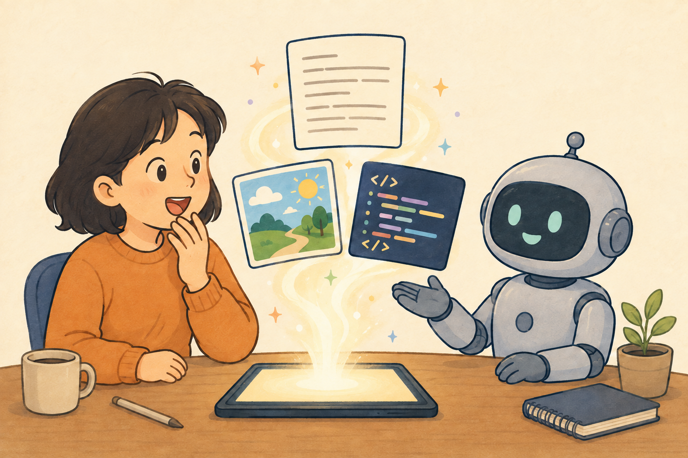
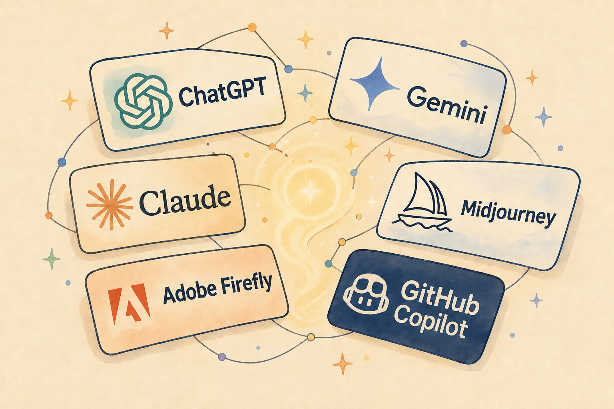

쉽게 먹는 AI 두번째 접시
머신러닝과 생성형 AI의 차이점
AI라는 큰 접시 안에는 여러 가지 조리법이 있습니다.
이번에는 AI가 데이터를 배우는 방법과 새로운 결과물을 만드는 방법을 나누어 살펴봅니다.
머신러닝은 무엇을 배우는 걸까요?
머신러닝은 컴퓨터가 많은 데이터를 살펴보고, 그 안의 규칙이나 패턴을 찾아 결과를 내도록 훈련하는 방법입니다.
Google for Developers는 머신러닝을 데이터를 이용해 예측을 하거나 콘텐츠를 만들어내도록 소프트웨어를 훈련하는 과정으로 설명합니다.
머신러닝의 기본 개념을 공식 자료로 보기
예측하는 머신러닝
예를 들어 과거의 날씨 자료를 많이 보여주면, 머신러닝은 기온·습도·구름 같은 정보와 비가 내린 결과 사이의 패턴을 찾을 수 있습니다.
그다음 새로운 날씨 정보를 받으면 비가 얼마나 올지 예측합니다.
스팸 메일 분류, 내비게이션의 도착 시간 예상, 동영상 추천도 이런 예측과 분류의 예가 될 수 있습니다.
이때 머신러닝의 결과는 과거 데이터에서 찾은 패턴을 바탕으로 한 예측이지, 정답을 보장하는 판정은 아닙니다.
생성형 AI는 무엇을 만들까요?
생성형 AI는 학습한 패턴을 바탕으로 글·이미지·음악·코드처럼 새로운 결과물을 만들어내는 AI입니다.
AI가 하는 일은 크게 예측·분류와 콘텐츠 생성으로 나누어 생각해볼 수 있습니다.
사진을 보고 “고양이인지 아닌지”를 구분하거나 내일 비가 올 확률을 예측하는 것은 예측·분류에 가깝고, 입력을 바탕으로 새로운 내용을 만드는 것은 생성형 AI의 예에 가깝습니다.
예를 들어 “비 오는 날 캠핑 준비물을 알려줘”라고 요청하면, 생성형 AI는 질문의 뜻과 학습한 언어 패턴을 바탕으로 답변을 구성합니다.
그림을 요청하면 이미지의 모양과 색을 조합하고, 노래를 요청하면 음악의 흐름을 조합하며, 코드를 요청하면 필요한 명령어의 초안을 만들어냅니다.
여기서 중요한 점은 생성형 AI가 사람처럼 경험하거나 머릿속에 완성된 답을 꺼내는 것이 아니라는 사실입니다.
입력된 내용과 학습한 패턴을 바탕으로 다음에 어울릴 내용을 차례로 계산해 결과물을 구성합니다.
따라서 생성형 AI의 결과물은 학습한 자료를 그대로 복사한 것이라기보다, 배운 패턴을 조합해 만든 새로운 출력에 가깝습니다.
다만 그 결과가 항상 사실이거나 독창적이라고 자동으로 보장되는 것은 아닙니다.
Google의 머신러닝 학습 자료도 생성형 AI를 기존 데이터에서 패턴을 학습해 텍스트·이미지·음악 같은 새로운 콘텐츠를 만드는 방식으로 설명합니다.
생성형 AI에 대한 같은 공식 설명 보기

생성형 AI에는 어떤 것들이 있나요?
생성형 AI는 한 가지 서비스의 이름이 아니라, 새로운 결과물을 만들어내는 기술을 가리키는 말입니다.
그래서 우리가 사용하는 서비스의 모습도 결과물에 따라 달라집니다.
- 글·대화: ChatGPT, Gemini, Claude처럼 질문에 답하고 글을 정리하는 서비스
- 이미지: Midjourney, Adobe Firefly처럼 설명을 바탕으로 이미지를 만드는 서비스
- 코드: GitHub Copilot처럼 프로그래밍 코드를 제안하고 설명하는 서비스
이 서비스들은 서로 다른 회사가 만들었고 기능과 이용 조건도 다릅니다.
또 하나의 서비스가 글·이미지·음성·코드를 여러 개 다루기도 하므로, 위 구분은 이해를 돕기 위한 예시로 보면 됩니다.

둘은 완전히 다른 기술일까요?
그렇지는 않습니다.
생성형 AI도 넓은 의미에서는 머신러닝을 이용해 만들어진 시스템입니다.
다만 우리가 결과를 바라보는 방식이 다릅니다.
- 머신러닝: 주어진 정보를 바탕으로 분류하거나 숫자를 예측합니다.
- 생성형 AI: 배운 패턴을 바탕으로 새로운 결과물을 만듭니다.
날씨가 내일 비가 올지 알려주는 것은 예측에 가깝고, 비 오는 날의 이야기를 써주는 것은 생성에 가깝습니다.
생성형 AI의 답도 확인이 필요해요
새로운 결과물을 만든다고 해서 언제나 정확한 결과를 만드는 것은 아닙니다.
학습한 정보가 부족하거나 질문의 뜻을 잘못 이해하면 그럴듯하지만 틀린 답을 만들 수 있습니다.
그래서 생성형 AI에게 중요한 일을 맡길 때는 출처를 확인하고, 숫자·날짜·이름을 다시 살펴보는 습관이 필요합니다.
한 줄 정리
머신러닝이 데이터를 바탕으로 분류와 예측을 한다면,
생성형 AI는 그 배운 패턴을 이용해 새로운 글·이미지·음악·코드 등을 만들어냅니다.